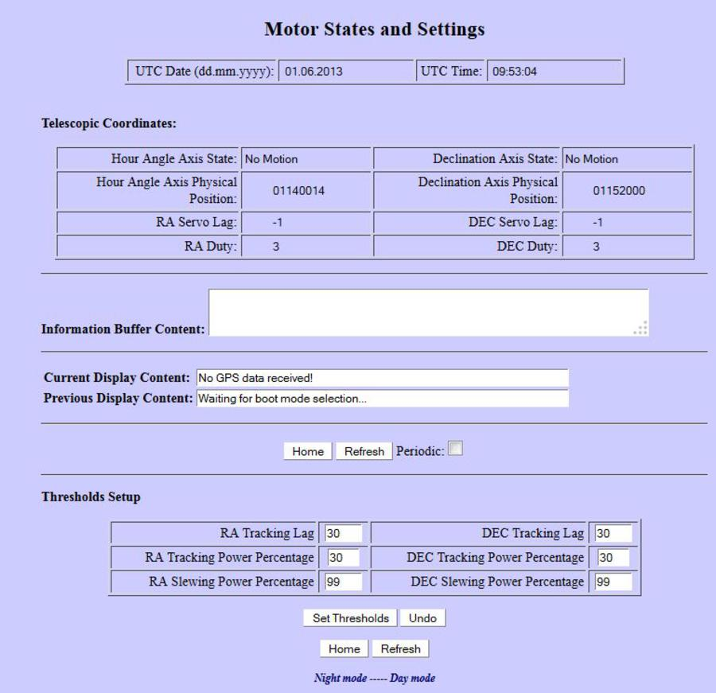

| This is the Motor States and Setting |
| Note: the bottom part of this page (below Threshold Setup) will only show up if you have used the
dated August 27, 2013 or later firmware. |
|
 |
The setting above the Thresholds Setup are read only
and for informational purposes only.
|
| The thresholds setting determine where the error
messages that is shown on the hand controller for motor lag, Tracking
power percentage, and Slewing Power Percentage overages is set. I
am not sure, but I think setting any of these to higher values will
delay or turn off the
associated error message unless that threshold is reached.. |
Please note
that if you do not see any changes on the hand controllers
"Menu"-->"Mount"-->"Balance" then you might not have the servo code
programmed into your Servo Controller IC. This should only be on
early 2010 and 2011 units.
|
|
The values in the RA tracking Lag/Dec Tracking Lag are set at a default of 30. You can change this to a higher
number to make the message not show up as much. I my self use 50 with my Mi-250 and Maxon motors. Also the
TA tracking Power Percentage and Dec Tracking Power Percentage can be changed if you wish. Please do not change the
RA Slewing Power Percentage or the Dec Slewing Power Precentage.
|